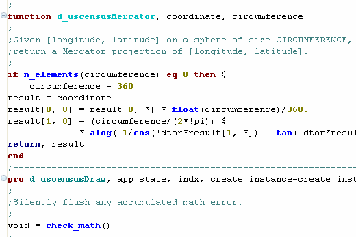

Content Assistance displays in a pop-up window when you place the mouse cursor in a full or partial IDL routine name and press Ctrl-Space . The Content Assist window displays a list of routine and variable names that begin with the characters in the selected string.
Highlighting an item from the Content Assist window displays the syntax for that routine. Selecting the item inserts it at the cursor location. In addition:
The semicolon (;) is the comment character in IDL. When IDL encounters the semicolon, it ignores the remainder of the line. It is good programming practice to fully document programs with comments. Comments in IDL do not slow down code execution or add noticeable size to IDL files.
A comment can exist on a line by itself, or can follow another IDL statement, as shown below:
; This is a comment
COUNT = 5 ; Set the variable COUNT equal to 5.
To toggle comments on or off, select a line or block of lines in the IDL Editor, right-click and select Toggle Comments from the menu. You can also use the Ctrl+; keyboard shortcut.
IDL also provides a way to create documentation from your code comments using IDLdoc. See Using IDLdoc to Generate Documentation for more information.
You can easily move lines up or down, copy lines, or insert lines. Select a line or block of lines and do the following:
The Syntax Coloring feature in IDL is the text chromacoding that makes your code easier to read and scan for particular elements. See the following example from the U.S. Census demo program:

Templates provide a convenient method to insert a pre-defined block of text into a program.
The following table describes the template options on the Preferences > IDL > Templates preferences page:
| Option | Description |
|---|---|
| Template List |
This list displays the templates currently loaded in the IDL Workbench. When you select a template in the list, the template contents are displayed in the Preview box. If the value in the Auto Insert column is “on”, the template is automatically inserted if there is an exact content assist match. |
| New/Edit |
Creates a new template, or edits a template selected from the list. Refer to Creating or Modifying a Template for more information. |
| Remove | Removes a selected template from the list. |
| Restore Removed | Restores all the current templates removed from the list. |
| Revert to Default | If you altered a template, this option restores the original version of the selected template. |
| Import | Imports an external .xml file containing IDL Workbench templates. A template file can be created using the Export button. |
| Export | Exports one or more selected templates into an external .xml file. These files can later be reimported with the Import button. |
| Preview | The Preview box shows the contents of a selected template. |
| Restore Defaults | Restores the Templates page to its initial configuration. |
| Apply | Applies all the current preference changes made to the Templates page. |
In addition to using preexisting templates, you can create your own code templates and modify them later.
To create a new template or modify an existing template:
Select Automatically insert to ensure that templates that exactly match a content assist request are automatically inserted into the editor.
Note: The Automatically insert option is only useful for templates that do not include a line or word selection.
Enter or modify the template text in the Pattern box.
You can insert variables into your template, which allow you to customize a template upon insertion. Variable names follow the form:
${variable_name}
Once a template is inserted in the editor, the variable sections of the template are active, and the variable text can be changed.
If you changed the name of the existing template, you are presented with the option of either renaming the template, or creating another template with the new name.
The following table describes the predefined variables available when constructing a template.
| Predefined Variable | Description |
|---|---|
| cursor | The cursor position after editing template variables. This is the spot in the template for adding additional code after the template is inserted into the editor. |
| date | The current date value. |
| dollar |
The dollar character ( ‘$’ ). Normally, the ‘$’ character is the beginning character of a user-defined variable. This variable is used when you need to insert a ‘$’ character into your code, but do not want it to be interpreted as a user-defined variable. |
| line_selection | The lines selected in the editor before the template is inserted. |
| time | The current time. |
| user | The current process user name. |
| word_selection | The word selected in the editor before the template is inserted. |
| year | The current year. |
If a template contains a word selection or a line selection variable, you must select the appropriate text prior to inserting the template. Selecting text prior to invoking the content assist menu also means that you must explicitly choose the template from the list (automatic template insertion is not an option).
To insert a template into your code that does not include a line or word selection:
Press Ctrl-Space to display the list of content assist items.
If the template was configured to automatically insert itself, and if the name of the template does not match any other content assist item, the template is inserted automatically into the editor.
${cursor}
variable, pressing
Tab
places the keyboard focus at the
${cursor}
position. Enter additional code at this position.
To insert a template into your code that includes a line or word selection:
${cursor}
variable, pressing
Tab
places the keyboard focus at the
${cursor}
position. Enter additional code at this position.
You can insert a template that consists of a single line into the command line as well as into an editor.
For example, suppose you want to select a data file with the extension
.dat
from a specific directory quite often. You could define a one-line template similar to the following, giving it a short name like
df
:
${file}=DIALOG_PICKFILE(PATH='C:\Sensor\Data', FILTER='*.dat')
Then to select a data file, type
df
at the command line and press
Ctrl-Space
. Assuming no other template begins with the characters
df
, the template is inserted into the Command Line with the initial file highlighted, allowing you to quickly change the variable name. Pressing
Return
brings up the file selection dialog in the specified directory, with the file list filtered for
.dat
files.
IDL gives you the ability to use source control directly from the Workbench. The source control tools that come with IDL include:
The IDL Workbench is developed in the Eclipse Interface Development Environment, and the source control tools are Eclipse plugins. Use the following links to find information about how to set up your environment to use the plugins for each source control application: